The Infini-Cube: a Rubik's cube with a continuum of layers
Thirty random moves, then the same moves undone in reverse order. Each move turns a slab whose thickness and position are random real numbers. Drag the cube to look around; the small cube shows the three hidden faces. The map on the right shows all six faces at once: each slab is a ring, and its points slide along circles. It is explained below.
A 3×3×3 Rubik's cube has three layers you can turn about each axis. A 4×4×4 has four, and an n×n×n has n. The Infini-Cube takes the limit: about each axis you may turn any slab, of any thickness, at any depth. The layers form a continuum.
This post introduces the puzzle and its notation, explains how we simulate a cube with uncountably many layers exactly, and then goes through what we have found so far:
- a law that every point obeys;
- a way to draw any picture on a face;
- measurements of how a random scramble mixes the colours.
The figures with buttons are live: drag a cube to turn it around, and press Play or Step to run the moves.
1. One cube, infinitely many layers
Model the cube as the unit cube $[0,1]^3$, with the standard colours: white on top (U), yellow on the bottom (D), green in front (F), blue at the back (B), red on the right (R) and orange on the left (L). A move picks an axis and an interval $[a,b]$ of depths along it, and turns every point of the cube in that slab by a quarter turn.
This is always a legal move. Every cross-section perpendicular to an axis is the unit square, so a slab of any thickness turns into itself, just like a layer of a real cube.
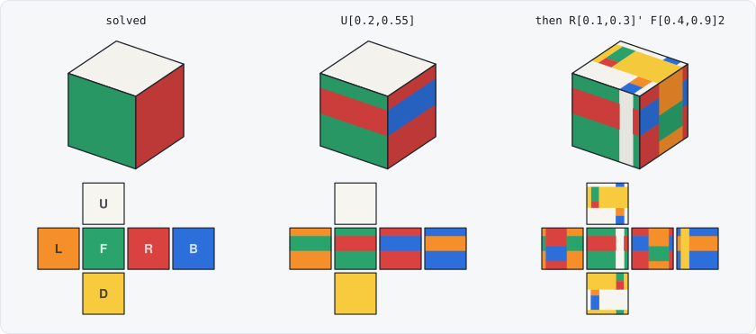
Left to right: the solved cube; after U[0.2,0.55]; after
U[0.2,0.55] R[0.1,0.3]' F[0.4,0.9]2. Under each cube is its net, the cube
unfolded into a cross: U on top, L F R B across the middle and D below.
There is a second way to flatten the cube. For the ordinary 3×3×3 cube, draw three families of three circles, one family for each axis. The stickers sit where circles of two different families cross, and a layer turn slides them along the circles of its own family. On the Infini-Cube each family becomes a continuous band of circles, each face becomes a curved square where two bands cross, and a slab turn rotates a ring.
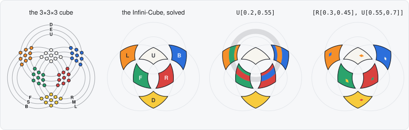
The circle map. Left: the 3×3×3 cube. Then the Infini-Cube: solved, after U[0.2,0.55] with the ring of that slab shaded, and after the commutator [R[0.3,0.45], U[0.55,0.7]]. The faces U, F, R are in the middle and L, B, D outside.
The live figures in this post use this map. When a slab turns, every point of it slides along its circle. A button on each figure switches to the unfolded cross.
A single move already shows the difference from a real cube. The band
U[0.2,0.55] sits at an arbitrary depth, and it cuts every side face along
lines that no finite cube has.
Here are the same three moves on the solid cube:
Press Step to turn one slab at a time. The grey surfaces are the cuts inside the cube, visible only while a slab turns.
2. Speaking Infini-Cube
The notation extends the standard cube notation.
One letter per axis. On a real cube, R and L turn different layers. Here an interval says which slab turns, so one face per axis is enough. We use R, U, F, with depth measured from that face: 0 is the face itself and 1 is the opposite face.
| Notation | Meaning |
|---|---|
R[a,b] |
turn the slab at depths $a$ to $b$ from R, a quarter turn clockwise as seen from R |
R[s] |
R[0,s]: the outer layer of thickness $s$ |
R[a,b]', R[a,b]2 |
counter-clockwise, half turn |
x, y, z |
the whole cube: R[0,1], U[0,1], F[0,1] |
(A)n, (A)' |
repeat, invert |
[A, B], [A: B] |
commutator $ABA'B'$, conjugate $ABA'$ |
L, D and B are accepted as shortcuts. They name the same slab seen from the
other side, so the direction flips: L[a,b] = R[1-b,1-a]'.
Every n×n×n cube is inside. A move whose endpoints are multiples of $1/n$ is an n×n×n cube move. So letters without an interval mean "outer layer of the default depth $d$". With $d = 1/3$, every 3×3 algorithm pastes in unchanged:
| 3×3 | Infini-Cube |
|---|---|
| R, U, F | R[1/3], U[1/3], F[1/3] |
| L | R[2/3,1]' |
| M (follows L) | R[1/3,2/3]' |
| r (wide) | R[2/3] |
As a result, every algorithm becomes a one-parameter family.
Here is R U R' U' at depths 0.15, 1/3 and 0.45:
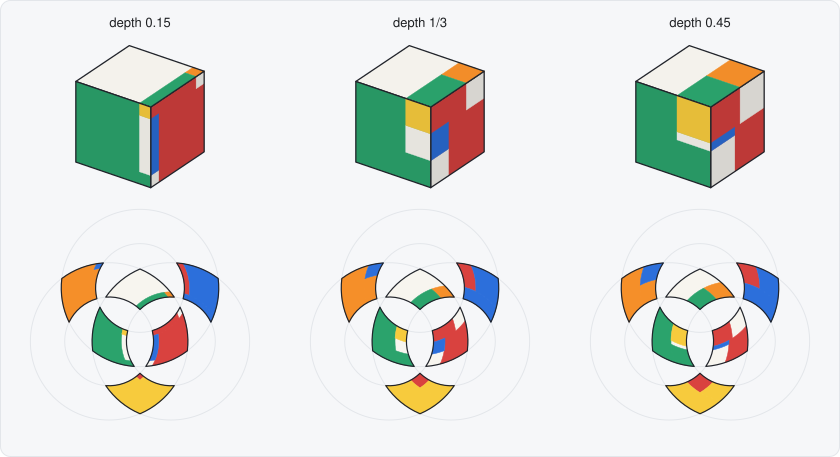
R U R' U' at depths 0.15, 1/3 and 0.45, as a solid and on the circle map.
Move the slider to change the depth yourself:
R U R' U' with the outer layers at the depth you choose. At 1/3 it is the
3×3 move sequence.
Identities.
- Gluing:
U[a,b] U[b,c] = U[a,c]. - Turns about the same axis commute.
- Every move is generated by outer layers:
U[a,b] = U[b] U[a]'. - A slab of zero width does nothing.
3. Simulating a continuum exactly
A computer cannot store a continuum, but after finitely many moves it doesn't need to. Each face is coloured in a finite pattern of axis-aligned rectangles. So the model keeps a grid whose cut lines are exactly the endpoints used so far, together with their mirror images $1-t$. The mirror images are needed because a turn exchanges depths measured from opposite faces. Endpoints such as 0.137 or 1/3 are stored as they are.
This means a move followed by its inverse returns exactly to where it started. Cut lines that no longer separate anything are removed, so a solved cube collapses back to a single cell per face. The pictures are drawn from this model, so the grid is never visible.
A move permutes the cells of its slab in 4-cycles, in place. Its cost is proportional to the slab's area: the model applies a 500-move random scramble in about 1.5 seconds.
4. The first law: every point has 24 places to be
Everything below rests on one lemma.
Lemma. Every move acts on each point of the surface either trivially or as one of the 24 rotations of the whole cube. Hence, after any sequence of moves, the content of every point $p$ came from $h\,p$ for some rotation $h$. A typical point can only ever visit 24 positions, four on each face.
A slab move either leaves a point alone or rotates it with the whole slab, and products of rotations are rotations. That is the whole proof. Some consequences:
- The cube is a continuum of tiny puzzles. Each 24-position orbit is like the "oblique centre" pieces of a big cube: 24 stickers, 4 of each colour. The Infini-Cube is a continuum of these, coupled by the moves.
- The full state is a rotation per point. The simulator stores, for every
cell, which of the 24 rotations brought its content there. That is why
it can tell "Looks solved" (every face is one colour) from
"Solved" (every point is back home). A whole-cube rotation
ylooks solved but isn't. - Repetition always comes back. A fixed sequence $g$ permutes the 24 points of every orbit. So $g^N$ is the identity, with $N = \operatorname{lcm}(1, \dots, 24) = 5\,354\,228\,880$.
- Orbit balance. Every orbit always carries exactly 4 of each colour.
5. Small moves: commutators
A single move changes a lot: a band around the whole cube. To make small changes, cubers use commutators $[A,B] = A B A' B'$. Take two thin slabs, one about the R axis and one about the U axis:
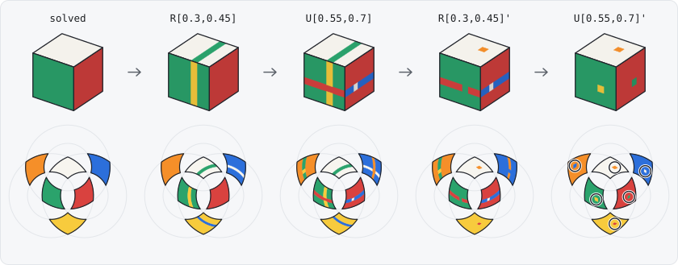
[R[0.3,0.45], U[0.55,0.7]], one move per panel. After four moves almost
everything is back, except the six small rectangles circled on the last map.
For slab widths $\varepsilon$ and $\delta$, the commutator changes area exactly $6\varepsilon\delta$. It is two 3-cycles of $\varepsilon \times \delta$ rectangles, one on each face, and it is the identity everywhere else. With very thin slabs it is almost invisible:
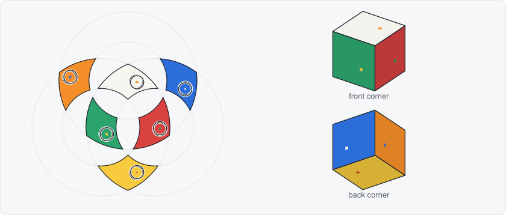
[R[0.3,0.36], U[0.6,0.66]]: six squares of side 0.06, circled on the circle map.
In 3D you can see where the six rectangles come from. The two slabs cross in two places, one on the front of the cube and one at the back:
[R[0.3,0.45], U[0.55,0.7]] in 3D. Three rectangles end up on the visible
corner and three on the hidden one.
So the group generated by the moves has elements with arbitrarily small support. This is what makes drawing possible.
6. Drawing on the cube
The question that started this section: can we draw any picture on a face? For example, take the blue face and draw a given curve on it in orange.
Yes. Look at where the commutator's six rectangles land. With the R slab at $I$ and the U slab at $J$, one of them is exactly the rectangle $I \times J$ on the blue face, in the blue face's own coordinates. Which colour arrives there depends on the variant:
| Commutator | paints $I \times J$ on the blue face |
|---|---|
[R[I], U[J]] |
white |
[R[I]', U[J]] |
yellow |
[U[J], R[I]] |
orange |
[U[J]', R[I]] |
red |
Commutators for different columns move completely disjoint rectangles, so they don't interfere. A picture made of column runs therefore costs exactly 4 moves per run. Only the column width discretises it: the top and bottom of each run are exact real numbers.
Three columns, slowly. Every column is one commutator, that is four slab turns: turn a U slab, turn an R slab, undo the first, undo the second. After each four turns one more orange rectangle sits on the blue face, and one small rectangle has changed on each of the other faces. Use Step to go one turn at a time.
A whole picture is the same thing repeated, column after column:
A random smooth curve drawn on the blue face in orange: 24 columns, 96 slab turns, nothing else. The slider changes the speed, and Step plays one turn. Watch the other faces. Replay draws a new curve.
The other five faces each receive a rotated or reflected copy of the drawing: the shadows. They follow from the 24-position lemma: painting a point of an orbit forces its orbit-mates to change too. In numbers, the total changed area is always exactly $6\times$ the painted area.
Here is the finished cube, with the curve and its five shadows, each on its own face:
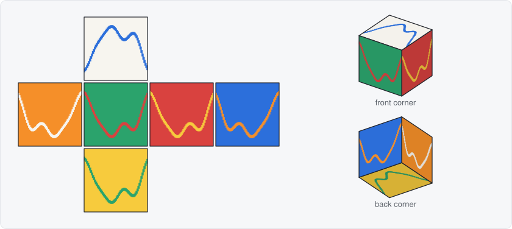
The finished drawing. Left: the net. Right: the cube seen from the front corner and from the back corner.
One detail is visible only in 3D. The drawing slabs stop $10^{-6}$ short of the opposite face, because a slab that reaches the face turns that whole face. So when a drawing move turns a slab that is almost the full depth, it leaves behind a skin $10^{-6}$ thick:
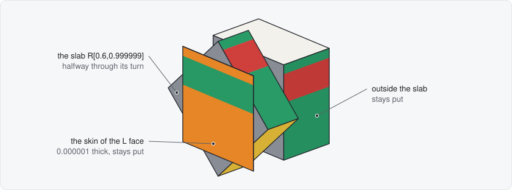
Halfway through R[0.6,0.999999]. The orange skin of the L face stays put,
and the slab behind it turns.
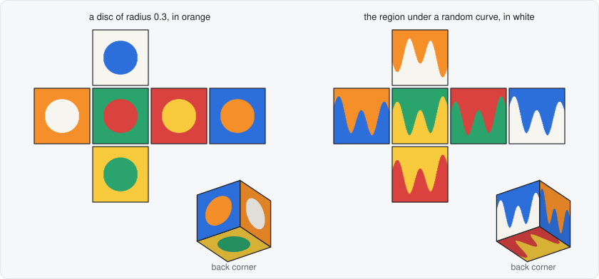
Left: a disc of radius 0.3 in orange (96 columns). Right: the region under a random curve, in white. In both, the blue face is on the far right of the net, and the small cube shows it from the back corner.
Theorem (one-face drawing). Every union of column runs on one face can be painted exactly with 4 moves per run, starting from the solved cube. Hence every measurable set on a face can be drawn to any accuracy, in white, yellow, orange or red. (Green needs more care: the variants that paint green also change a second rectangle on the blue face.)
Can the shadows be avoided? Not entirely. By orbit balance, the orange that arrives on the blue face has to leave another face, and the blue it displaces has to go somewhere. So at least two faces change. Two is enough.
Take two parallel slabs, say U[I] and U[J] with $I$ and $J$ disjoint, and a thin outer layer L[0,d]. The commutator
[U[I]', L[0,d] U[J]' L[0,d]']
is a 3-cycle of just three rectangles. One is on the blue face and turns orange; its sides are given by $I$ and $J$. One is on the orange face and turns blue. The third receives the colour it already had, so nothing shows. This costs 8 moves per rectangle instead of 4, and the other four faces stay solved.
A curve drawn with these 3-cycles, 16 columns. Every step is again a slab turn, eight per rectangle. Only the blue and the orange face change: the orange face collects the displaced blue. Replay draws a new curve.
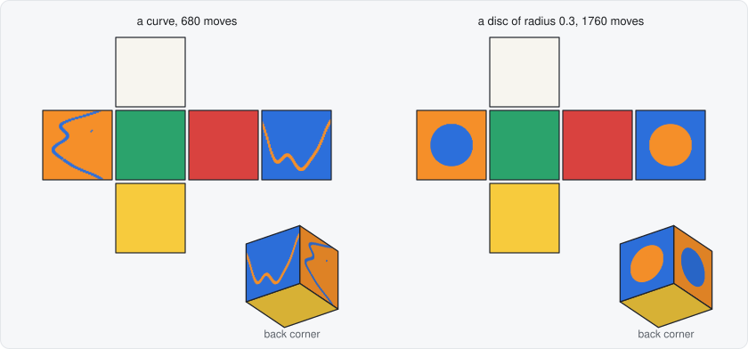
A curve (64 columns, 680 moves) and a disc (96 columns, 1760 moves), drawn with 3-cycles. The white, green, red and yellow faces are untouched.
Two restrictions come with it. The thin layer covers a frame of width $d$ around the face, so the picture has to stay inside that frame. And a run has to be cut where it crosses a diagonal of the face, because there the two slabs would overlap.
The sequences were found by a computer search. For each colour there are 32 variants, which differ in where the third rectangle lies. The program tries them in turn on a model cube and keeps the first one that leaves the earlier runs intact. For a curve and for a disc this always works. For a region that covers a large part of the face it does not yet: the region under the curve above still needs the six-face commutator for most of its runs.
7. A pattern gallery
Classic cube patterns generalise to families. Every pattern below is a single algorithm in the notation, with its sizes as parameters.
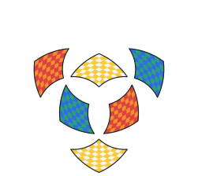 |
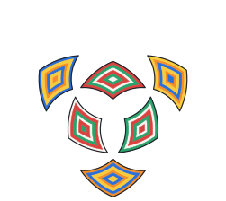 |
|
| 7×7 checkerboard: every other band of 7, half-turned about all three axes | Concentric squares: the six-spot pattern U D' R L' F B' U D' at five depths |
Cube in a cube at size 0.4: the 3×3 algorithm, outer layers of depth 0.4 |
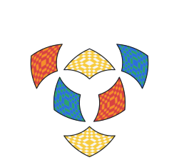 |
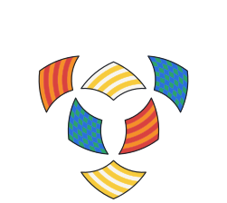 |
|
Nested frames: the checker cross M2 E2 S2 at four slab widths |
Plaid: stripes about two axes | Six spots at depth 0.2 |
The same patterns read better as solids:
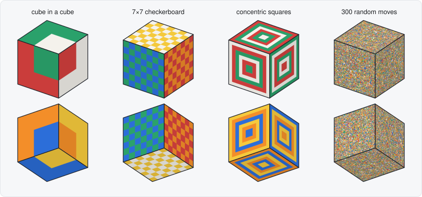
Top row: the front corner; bottom row: the back corner. Left to right: cube in a cube, the 7×7 checkerboard, concentric squares, and 300 random moves for contrast.
8. How a random walk mixes the cube
A random walk step turns a random slab about a random axis by 1, 2 or 3 quarter turns, with both endpoints uniform in $[0,1]$. How fast does the cube become "random"?
The answer depends on the scale you look at, so we track several metrics.
- Wrong-colour area: the share of the surface not showing its home colour.
- Mix-norm: a multiscale Sobolev-type norm from fluid-mixing research, which is 1 when solved and tends to 0 as the cube mixes.
- Rotation mixing: how uniformly the 24 rotations are spread over the surface.
- Local diversity $D_r$: the probability that two points within distance $r$ have different colours.
All are scaled so that 0 means solved and 1 means fully mixed.
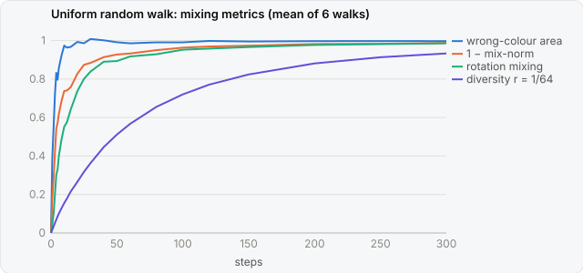
Wrong-colour area saturates within about 20 steps, and the mix-norm and rotation mixing within about 100. Fine-scale diversity takes hundreds. The structure that remains shows up on the diversity map, which shades each point by how mixed its neighbourhood is:
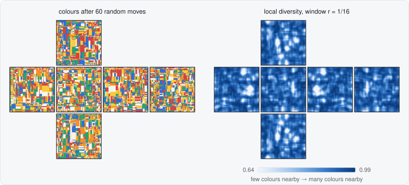
After 60 steps. Left: the colours. Right: local diversity at radius 1/16, stretched to the observed range 0.64 to 0.99. Light spots are patches that are still unmixed.
The length scales follow simple laws. Over 6 walks of 300 steps:
- The correlation length $\xi$, the typical size of a single-colour patch, decays like $\xi \approx 1.7/n$ after $n$ steps.
- The interface length, the total length of boundaries between colours, grows like $7n$. At $n = 300$ it is $6.99\,n$.
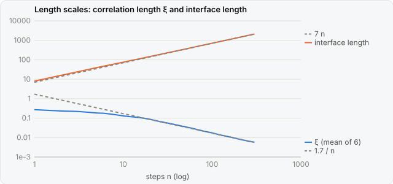
Mixing at scale $r$ takes about $1/r$ steps. The heuristic is this. With uniform endpoints, cuts fall uniformly, so an interval of length $r$ survives $n$ steps without a cut with probability roughly $e^{-c\,n r}$. Mixing at scale $r$ should therefore depend only on $n \cdot r$. Plotting diversity at three scales against steps × $r$ confirms it: the three curves collapse onto one.
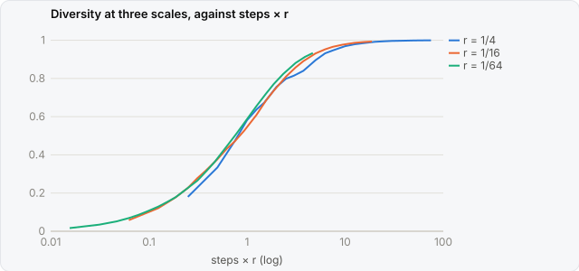
Two smaller observations:
- Once mixed, about 1/5 of all colour boundaries separate opposite colours (white and yellow, red and orange, green and blue). We measured 0.205. That is exactly the share expected if all 15 colour pairs were equally likely.
- The constants 1.7 and 7 are not yet explained. A naive count says each move adds 8 units of potential boundary, of which 5/6 separate different colours once mixed: that gives 6.7, not 7.